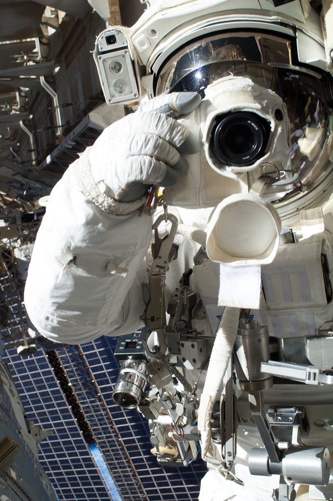
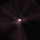
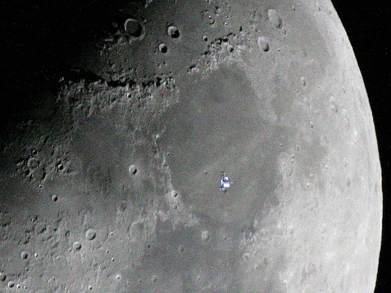

Small steps and giant leaps: working towards effective stewardship of digital records
Small steps and giant leaps:
working towards effective stewardship of digital records
Digital Archivist mantra:
DO IT ONCE, DO IT RIGHT, DO IT INTENTIONALLY.
You’ve Got To Walk Before You Can Run [OCLC]
- Do no harm (to the physical media or the content).
- Don’t do anything that unnecessarily precludes future action and use.
- Don’t let the first two principles be obstacles to action.
- Document what you do.
Small step #1:
What do you have?
- Locate it
- Incoming accessions
- Previously accessioned (or acquired) collections
- Describe it
What You'll Need

- Human
- Database or spreadsheet to capture the descriptive information
Small step #2:
Appraisal
- What do donors want to send?
- Do you want all of it?
What You'll Need
- Human
- Appraisal questions checklist
- Directory print utility, like Karen's Directory Printer
(bonus - you can get checksums w/this tool)

Small step #3:
Acquisitions for physical media: imaging
- Imaging software
- Write-blocking hardware
- Drives/hardware to read media
- Virus detection software
Credit: NASA
Small step #4:
Network transfer acquisitions
- Designated server space
- Means of validating complete transfer (Bagit)
- Virus detection software
credit: NASA
Small step #5:
Website capture
- Web crawling tool (HTTrack)
- Web-crawling service (Archive-it)
What does processing electronic
records look like?
The tasks are the same, but the tools are different.

Basic steps:
- Weed duplicates, temp files, drafts, etc
- Identify sensitive or restricted materials
- Arrange the files as needed (intellectual arrangement)
- Describe the materials and their arrangement
What you'll need:
- Expensive option: Forensic Toolkit (FTK)
- Open source options: BitCurator, Autopsy
- Description tool: e.g. ArchivesSpace
FTK vs BitCurator
|
FTK |
BitCurator |
| Arrangement |
YES |
NO |
| Identification of sensitive/restricted materials |
YES |
YES |
| Identification of duplicate materials |
YES |
** |
| Redaction |
NO |
NO |
| Export of technical metadata |
NO |
YES |
| Visualization tools |
YES |
NO |
Repository ingest
- File format identification
- Unique ID assignment
- Documentation of preservation actions
- Fixity information
- Metadata extraction
- Normalization
What you need:
- Technical support
- Archivematica and/or repository solution
- DIY - see Chris Prom’s E-Records post

Distributed Digital Preservation

credit: J'ram_DJ
Access: 3 basic requirements [AIMS report]
- Create a system wherein material can be stored and retrieved
- Apply appropriate access restrictions
- When possible, provide access in a manner that presents the significant properties required by user communities